콘크리트기사 (2019-04-27 기출문제)
1과목: 재료 및 배합
1. 제빙화학제에 노출된 콘크리트에서 플라이 애시, 고로 슬래그 미분말 또는 실리카 퓸을 시멘트 재료의 일부로 치환하여 사용하는 경우, 이들 혼화재의 사용량에 대한 설명으로 틀린 것은? (단, 혼화재의 사용량은 시멘트와 혼화재 전체에 대한 혼화재의 질량 백분율로 나타낸다.)
- 혼화재로서 실리카 퓸을 사용하는 경우 그 사용량은 10%를 초과하지 않도록 하여야 한다.
- 혼화재로서 플라이 애시 또는 기타 포졸란을 사용하는 경우 그 사용량은 25%를 초과하지 않도록 하여야 한다.
- 혼화재로서 고로 슬래그 미분말을 사용하는 경우 그 사용량은 30%를 초과하지 않도록 하여야 한다.
- 혼화재로서 플라이 애시 또는 기타 포졸란과 실리카 퓸을 합하여 사용하는 경우 그 사용량은 35%를 초과하지 않도록 하여야 한다.
(정답률: 58%)

2. 굵은 골재의 표면건조포화상태에 밀도(Ds)를 구하는 아래 식에서 B의 값으로 옳은 것은?
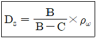
- 시료의 수중 질량(g)
- 절대건조상태 시료의 질량(g)
- 공기 중 건조상태 시료의 질량(g)
- 표면건조포화상태 시료의 질량(g)
(정답률: 82%)
3. 시멘트 클링커의 주요 조성화합물인 엘라이트(C3S)와 벨라이트(C2S)의 수화물 특성에 대한 설명으로 옳은 것은?
- 수화열은 C2S보다 C3S가 크다.
- 화학저항성은 C3S보다 C2S가 작다.
- 수화반응속도는 C3S보다 C2S가 빠르다.
- 재령 28일 이내의 단기강도는 C2S보다 C3S가 작다.
(정답률: 74%)
4. 아래의 표는 어떤 2종 포틀랜드 시멘트의 화학성분 분석 결과이다. 이 2종 포틀랜드 시멘트 성분 중 C3A의 조성비를 한국산업표준(KS)에 따라 구한 값은?
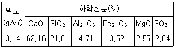
- 6.5%
- 8.5%
- 10.5%
- 12.5%
(정답률: 29%)
5. 콘크리트용 모래에 포함되어 있는 유기 분순물 시험 방법에 대한 설명으로 틀린 것은?
- 시험시료에는 3%의 수산화나트륨 용액을 넣는다.
- 시험에 사용되는 모래시료의 양은 약 450g을 채취한다.
- 식별용 표준색용액은 2%의 탄닌산 용액과 3%의 수산화나트륨 용액을 섞어 만든다.
- 시험이 끝난 시료의 용액색이 표준색 용액보다 연한 경우에는 콘크리트용 골재로 사용할 수 없다.
(정답률: 86%)
6. 콘크리트에 사용되는 부순 잔골재에 대한 설명으로 옳지 않은 것은?
- 부순 잔골재를 사용한 콘크리트는 미세한 분말량이 많아짐에 따라 응결의 초결시간과 종결시간이 빨라지는 경량이 있다.
- 부순 잔골재를 사용한 콘크리트는 미세분말의 양이 많아져서 슬럼프가 증가되므로 잔골재율을 높여야 한다.
- 부순 잔골재를 사용할 경우 강모래를 사용한 콘크리트와 동일한 슬럼프를 얻기 위해서는 단위수량이 5~10%정도 더 필요하다.
- 부순 잔골재를 사용한 콘크리트는 미세분말의 양이 많아지면 공기량이 줄어들기 때문에 필요시 AE제의 양을 증가시켜야 한다.
(정답률: 52%)
7. 물과 반응하여 콘크리트 강도 발현에 기여하는 물질을 생성하는 것의 총칭으로 시멘트, 고로 슬래그 미분말, 플라이 애시 실리카 퓸 팽창재 등을 함유하는 것은?
- 감수제
- 결합재
- 촉매제
- 혼화재
(정답률: 54%)
8. 골재 체가름 결과가 다음과 같을 때 굵은 골재의 최대 치수는?
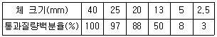
- 13mm
- 20mm
- 25mm
- 40mm
(정답률: 82%)
9. 일반 콘크리트의 배합에 관한 설명으로 틀린 것은?
- 무근콘크리트에서 일반적인 경우 슬럼프 값의 표준은 50~150mm이다.
- 제빙화학제가 사용되는 콘크리트의 물-결합재비는 55% 이하로 하여야 한다.
- 일반적인 구조물에서 굵은 골재의 최대 치수는 20mm 또는 25mm를 표준으로 한다.
- 콘크리트의 수밀성을 기준으로 물-결합재비를 정할 경우, 그 값은 50% 이하로 하여야 한다.
(정답률: 66%)
10. 다음 중 콘크리트 배합에서 시멘트의 사용량을 가급적 줄이기 위해 고려해야 하는 것은?
- 골재의 입도
- 경량골재의 사용
- 콘크리트의 수축
- 콘크리트 중의 염분량
(정답률: 60%)
11. 르샤틀리에 비중병에 의한 시멘트의 비중 시험결과가 아래의 표와 같을 때 시멘트의 비중은?
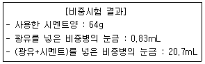
- 2.93
- 3.17
- 3.22
- 3.47
(정답률: 69%)
12. 콘크리트용 강섬유의 인장강도 시험방법(KS F 2565)에서 평균 재하 속도로 옳은 것은?
- 1~3MPa/s
- 5~6MPa/s
- 10~30MPa/s
- 40~50MPa/s
(정답률: 59%)
13. 설계기준 압축강도가 40MPa인 콘크리트의 배합강도를 아래의 조건을 따라 구하면?
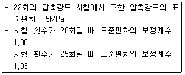
- 47.11Mpa
- 48.35Mpa
- 48.85Mpa
- 50.00Mpa
(정답률: 53%)
14. 콘크리트에 사용하는 혼화재료에 관한 일반적인 설명으로 옳지 않은 것은?
- 실리카 퓸은 실리카질 미립자의 미세출진효과에 의해 콘크리트의 강도를 높인다.
- 팽창재는 에트린가이트 및 수산화칼슘 등의 생성에 의해 콘크리트를 팽창시킨다.
- 플라이 애시는 유리질 입자의 잠재수경성에 의해 콘크리트의 초기강도를 증진시킨다.
- 착색재는 콘크리트와 모르타르에 색을 입히는 혼화재로서 착색재를 혼화한 콘크리트는 본래의 콘크리트 특성과 함께 마무리재로서의 기능도 함께 가진다.
(정답률: 73%)
15. 아래 표의 시험항목 중 KS F 2561(철근 콘크리트용 방청제)의 품질시험 항목으로 규정되어 있는 것으로 올바르게 나타낸 것은?
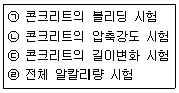
- ㉠, ㉡
- ㉠, ㉣
- ㉡, ㉢
- ㉡, ㉣
(정답률: 50%)
16. 콘크리트 1m3를 만드는 배합설계에서, 단위 시멘트양이 320kg, 단위수량이 160kg, 공기량이 5%이었다. 잔골재율이 35%, 잔골재 표건 밀도가 2.7g/cm3, 굵은 골재표건 밀도가 2.6g/cm3, 시멘트의 밀도가 3.2g/cm3일 때 단위 잔골재량(S)은?
- 614kg
- 652kg
- 685kg
- 721kg
(정답률: 57%)
17. 조강 포틀랜드 시멘트에 대한 설명으로 옳은 것은?
- 물과 혼합하면 수 분 후에 경화가 시작되어 2~3시간에 압축강도는 10MPa에 달한다.
- 수화열의 발생이 적고 초기강도 및 장기강도가 보통 포틀랜드 시멘트보다 크다.
- 1일 강도가 보통 시멘트의 28일 강도와 거의 같아 긴급공사나 공기단축용으로 사용된다.
- C3S를 많게 하고 C2S를 적게 하고 분말도를 4000~4500cm2/g로 미분쇄하여 초기강도를 크게 한 시멘트이다.
(정답률: 50%)
18. 콘크리트용 혼화재로 실리카 퓸을 혼합한 콘크리트의 성질에 대한 설명으로 틀린 것은?
- 실리카 퓸의 혼합량이 증가할수록 콘크리트에 소요되는 단위수량은 거의 선형적으로 감소한다.
- 콘크리트에 실리카 퓸을 혼합하면 콘크리트의 유동화 특성이 변화하여 블리딩과 재료분리를 감소시킨다.
- 실리카 퓸의 혼합률이 5~15%정도 이내에서는 실리카 퓸의 혼합률이 증가함에 따라 압축강도도 증가한다.
- 실리카 퓸을 콘크리트에 혼합하면 수화열을 저감시키고, 강도발현이 현저하며, 수밀성, 화학저항성 및 내구성을 향상시킬 수 있다.
(정답률: 49%)
19. 시방 배합설계 결과 잔골재량이 630kg/m3, 굵은 골재량이 1170kg/m3이었다. 현장의 골재 상태가 아래 표와 같을 때 현장 배합의 잔골재량과 굵은 골재량으로 옳은 것은?
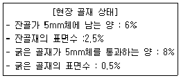
- 잔골재:579kg/m3, 굵은 골재 : 1241kg/m3
- 잔골재:551kg/m3, 굵은 골재 : 1229kg/m3
- 잔골재:531kg/m3, 굵은 골재 : 1201kg/m3
- 잔골재:519kg/m3, 굵은 골재 : 1189kg/m3
(정답률: 54%)
20. 레디믹스트 콘크리트의 제조에 사용되는 물로서 상수돗물 이외의 물의 품질규정에 대한 설명으로 틀린 것은?
- 현탁 물질의 양은 5g/L 이하여야 한다.
- 염소 이온(Cl-)의 양은 250mg/L 이하여야 한다.
- 용해성 증발 잔류물의 양은 1g/L 이하여야 한다.
- 모르타르의 압축 강도비는 재령 7일 및 재령 28일에서 90% 이상이어야 한다.
(정답률: 72%)
2과목: 제조, 시험 및 품질관리
21. 안지름이 25cm, 안높이가 28.5cm인 용기에 콘크리트를 넣고 2시간 동안 블리딩에 의한 물의 양을 측정했을 때 64.5mL이었다면 이 때 블리딩량은?
- 0.13mL/cm2
- 0.013mL/cm2
- 0.92mL/cm2
- 0.092mL/cm2
(정답률: 56%)
22. 콘크리트 현장 품질관리에서 재하 시험에 의한 구조물의 성능시험을 실시하여야 하는 경우로 틀린 것은?
- 공사 중에 콘크리트가 동해를 받았다고 생각되는 경우
- 공사 중 구조물의 안전에 어떠한 근거 있는 의심이 생긴 경우
- 공사 중 현장에서 취한 콘크리트 압축강도 시험 결과를 보고 강도에 문제가 있다고 판단되는 경우
- 콘크리트의 받아들이기 품질검사 항목에서 판정기준을 3가지 이상 벗어나는 콘크리트로 시공한 경우
(정답률: 57%)
23. 일반적으로 사용되는 굳은 콘크리트의 강도 특성 중 가장 중요시되는 것은?
- 휨강도
- 압축강도
- 인장강도
- 전단강도
(정답률: 78%)
24. 콘크리트 타설에 대한 설명으로 틀린 것은?
- 콘크리트 표면에 고인 물은 홈을 만들어 흐르게 하는 것이 좋다.
- 외기온도가 높아질수록 허용 이어치기시간간격은 짧게 하는 것이 좋다.
- 콘크리트를 쳐 올라가는 속도가 너무 빠르면 재료분리가 일어나기 쉽다.
- 타설한 콘크리트는 거푸집 안에서 내부 진동기를 이용하여 횡방향으로 이동시킬 수 없다.
(정답률: 72%)
25. 콘크리트 균열에 대한 검토 사항 중 옳지 않은 것은?
- 미관이 중요한 구조라 해도 미관상의 허용 균열폭이 없기 때문에 균열 검토를 하지 않는다.
- 콘크리트에 발생되는 균열이 구조물의 기능, 내구성 및 미관 등의 사용 목적에 손상을 주는가에 대하여 적절한 방법으로 검토해야 한다.
- 균열 제어를 위한 철근은 필요로 하는 부재 단면의 주변에 분산시켜 배치하여야 하고, 이 경우 철근의 지름과 간격을 가능한 한 작게 하여야 한다.
- 내구성에 대한 균열의 검토는 콘크리트 표면의 균열폭을 환경조건, 피복두께, 공용기간으로부터 정해지는 강재부식에 대한 균열폭 이하로 제어하는 것을 원칙으로 한다.
(정답률: 71%)
26. 보통 콘크리트와 비교할 때 AE 콘크리트의 특성이 아닌 것은?
- 잔골재율 증가
- 단위 수량 감소
- 동결 융해에 대한 저항성 증가
- 워커빌리티(workability)의 증가
(정답률: 63%)
27. 현장에서 콘크리트 압축강도를 20회 측정한 결과 표준편차는 1.4MPa이었다. 설계기준 압축강도(fck)가 30MPa일 때 배합강도(fcr)는? (단 시험횟수가 20회일 때의 표준편차의 보정계수는 1.08을 사용한다.)
- 28MPa
- 30MPa
- 32MPa
- 40MPa
(정답률: 64%)
28. 콘크리트의 공기량 측정 시 흡수율이 큰 골재의 경우 골재 낱알의 흡수가 시험결과에 큰 영향을 미치므로 골재의 수정계수를 측정하여야 한다. 다음과 같은 1배치 배합에 대하여 압력방법(KS F 2421)에 의한 골재의 수정계수를 구할 때 필요한 잔골재 및 굵은 골재의 양은? (단, 공기량 시험기의 용적은 6ℓ로 한다.)
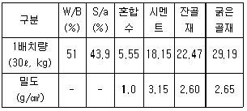
- 잔골재=3.5kg, 굵은 골재=4.8kg
- 잔골재=4.5kg, 굵은 골재=5.8kg
- 잔골재=5.5kg, 굵은 골재=6.8kg
- 잔골재=6.5kg, 굵은 골재=7.8kg
(정답률: 57%)
29. 거푸집 및 동바리의 해체에 대한 설명으로 틀린 것은?
- 보 등의 수평부재의 거푸집은 기둥, 벽등 수직부재의 거푸집보다 일찍 해체하는 것이 원칙이다.
- 확대기초, 보 등의 측명 거푸집을 탈형하기 위해 콘크리트 압축강도는 5MPa 이상이 되도록 하는 것이 좋다.
- 거푸집널 존치기간 중 평균기온이 10℃ 이하인 경우에는 압축강도 시험을 수행하여 확인한 후에 해체해야 한다.
- 콘크리트 내부의 온도와 표면 온도차가 크면 균열발생의 가능성이 커지므로 주의해야 한다.
(정답률: 72%)
30. 현장에서 타설하는 콘크리트를 대상으로 압축강도에 의한 콘크리트의 품질검사를 실시하고자 한다. 하루 360m3의 콘크리트가 제조 및 타설된다면 실시해야 할 검사횟수는? (단, 1회의 시험값은 공시체 3개의 압축강도 시험값의 평균 값이다.)
- 2회
- 3회
- 4회
- 5회
(정답률: 70%)
31. 굳은 콘크리트의 압축강도에 영향을 미치는 요소에 대한 일반적인 설명으로 틀린 것은?
- 공기량이 적을수록 압축강도는 증가한다.
- 물-결합재비가 낮을수록 압축강도는 증가한다.
- 시험체의 재하속도가 느릴수록 압축강도는 증가한다.
- 단위 수량이 동일한 경우 시멘트량이 증가하면 압축강도는 증가한다.
(정답률: 65%)
32. 콘크리트의 품질변동을 정량적으로 나타내는데 있어서, 10개 공시체의 압축강도를 측정한 결과의 평균강도가 25MPa이고, 표준편차가 2.5Mpa인 경우의 변동계수는?
- 10%
- 15%
- 20%
- 25%
(정답률: 63%)
33. 댐 건설 현장에서 콘크리트를 타설한 후 다음날 타설된 콘크리트를 확인하였더니 타설된 콘크리트 표면에 폭 2mm이하의 균열이 여러 군데에서 발견되었다. 다음 중 가장 적정하게 처리한 것은?
- 균열이 생긴 부분을 사진으로 촬영하여 둔다.
- 댐에서 균열 폭이 2mm 이하인 균열은 관리하지 않고 다음 공정을 준비한다.
- 타설한 콘크리트가 1일 밖에 지나지 않았기 때문에 다른 조치 없이 7일 후에 다시 와시 관리한다.
- 균열이 생긴 부분을 연필 등으로 처음과 끝부분을 표시하고, 균열 발생 확인 날짜 등을 현장에 표시한 후 균열관리 대장에 기입하여 계측 관리한다.
(정답률: 76%)
34. 레디믹스트 콘크리트(KS F 4009)에서 규정하고 있는 콘크리트 회수수의 품질기준으로 틀린 것은?
- 염소 이온(Cl-) 량 : 350mg/L 이하
- 단위 슬러지 고형분율 : 3.0%를 초과하면 안 된다.
- 시멘트 응결 시간의 차 : 초결 30분 이내, 종결 60분 이내
- 모르타르의 압축 강도비 : 재령 7일 및 28일에서 90% 이상
(정답률: 71%)
35. 비파괴검사에 의하여 검사할 수 없는 것은?
- 콘크리트 강도
- 철근부식 유무
- 콘크리트 배합비
- 콘크리트 부재의 크기
(정답률: 64%)
36. 공기량이 콘크리트의 물성에 미치는 영향을 설명한 것으로 틀린 것은?
- 일반적으로 공기량이 증가하면 탄성계수는 감소한다.
- 동일한 물-결합재비에서는 공기량이 증가할 때 압축강도가 증가한다.
- 연행공기는 콘크리트의 워커빌리티를 개선하면, 공기량이 증가면 슬럼프도 증가한다.
- 동결에 의한 팽창응력을 기포가 흡수함으로써 콘크리트의 동결융해 저항성을 개선한다.
(정답률: 66%)
37. 잔골재의 품질관리에 대한 사항 중 틀린 것은?
- 잔골재의 시험횟수는 공사초기에는 1일 2회 이상 시험하는 것이 바람직하다.
- 잔골재의 시험횟수는 주로 그 입도 및 함수율의 변화 정도에 따라 정할 필요가 있다.
- 잔골재로 바다 잔골재를 사용할 경우에는 염화물, 입도 및 함수율의 시험 빈도를 다른 잔골재보다 감소시킬 필요가 있다.
- 잔골재의 저장 및 취급방법이 적절하고 입도 및 함수율의 변화가 적다고 판단됨에 따라서 시험횟수를 줄여는 것이 좋다.
(정답률: 65%)
38. 아래 그림 초음파 속도법의 측정법 중 한 종류를 나타낸다. 이 측정법의 명칭으로 옳은 것은?
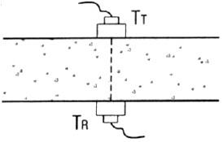
- 간접법
- 직접법
- 추정법
- 표면법
(정답률: 65%)
39. 레디믹스트 콘크리트 운반차와 운반시간에 대한 설명으로 옳지 않은 것은?
- 덤프트럭은 포장 콘크리트 중 슬럼프 25mm의 콘크리트를 운반하는 경우에 한하여 사용할 수 있다.
- 덤프트럭으로 콘크리트를 운반하는 경우, 운반 시간의 한도는 혼합하기 시작하고 나서 1시간 이내에 공사 지점에 배출할 수 있도록 운바한다.
- 트럭 애지테이터나 트럭 믹서로 콘크리트를 운반하는 경우, 콘크리트는 혼합하기 시작하고 나서 1.5시간 이내에 공사지점에 배출할 수 있도록 운반한다.
- 덤프트럭으로 운반 했을 때 콘크리트의 1/4과 3/4의 부분에서 각각 시료를 채취하여 슬럼프 시험을 하였을 경우 양쪽 플럼프 차이가 30mm 이하여야 한다.
(정답률: 47%)
40. 공사현장에서 양생한 공시체에 관한 내용으로 틀린 것은?
- 설계기준압축강도보다 3.5MPa를 초과하면 85%의 한계조항은 무시할 수 있다.
- 현장 양생되는 공시체는 시험실에서 양생되는 공시체의 양생기간보다 길게 하고 동일한 시료를 사용하여 만들어야 한다.
- 실제의 구조물에서 콘크리트의 보호와 양생이 적절한지 검토하기 위하여 현장상태에서 양생된 공시체 강도의 시험을 요구할 수 있다.
- 지정된 시험 재령일에 실시한 현장 양생된 공시체의 강도가 동일 조건의 시험실에서 양생된 공시체 강도의 85%보다 작을 때 콘크리트의 양생과 보호절차를 개선하여야 한다.
(정답률: 46%)
3과목: 콘크리트의 시공
41. 먼저 타설된 콘크리트와 나중에 타설되는 콘크리트 사이에 완전히 일체화가 되어 있지 않음에 따라 발생하는 이음은?
- 겹침 이음
- 신축 줄눈
- 콜드 조인트
- 균열 유발 줄눈
(정답률: 71%)
42. 수밀 콘크리트의 공기량은 최대 몇 %이하로 하여야 하는가?
- 2%
- 4%
- 6%
- 8%
(정답률: 61%)
43. 숏크리트의 기능에 대한 설명으로 틀린 것은?
- 강지보재 또는 록볼트에 지반 압력을 전달하는 기능을 발휘하도록 하여야 한다.
- 굴착면을 피복하여 풍화방지, 지수, 세립자 유출 등을 방지하도록 한다.
- 비탈면, 법면 또는 벽면 보호는 별도의 보강공법이 적용되기 때문에 숏크리트 설치로 인한 추가 안전성 확보는 필요 없다.
- 지반과의 부착 및 자체 전단 저항효과로 숏크리트에 작용하는 외력을 지반에 분산시키고, 터널 주변의 붕락하기 쉬운 암괴를 지지하며, 굴착면 가까이에 지반아치가 형성될 수 있도록 한다.
(정답률: 78%)
44. 일반 숏크리트의 장기 설계기준압축강도는 재령 28일로 설정한다. 이 때 장기 설계기준압축강도는 몇 MPa 이상이어야 하는가? (단, 영구 지보재 개념으로 숏크리트를 타설한 경우는 제외한다.)
- 21MPa
- 24MPa
- 27MPa
- 30MPa
(정답률: 56%)
45. 일반 콘크리트의 시공에 대한 주의사항으로 옳지 않은 것은?
- 넓은 장소에서는 콘크리트 공급원으로부터 가까운 쪽에서 시작해서 먼 쪽으로 타설한다.
- 타설까지의 시간이 길어질 경우에는 양질의 지연제, 유동화제 등의 사용을 사전에 검토해야 한다.
- 비비기로부터 타설이 끝날 때까지의 시간은 외기온도가 25℃ 이상일 때는 1.5시간을 넘어서는 안 된다.
- 콘크리트를 2층 이상으로 나누어 타설할 경우, 상층의 콘크리트 타설을 원칙적으로 하층의 콘크리트가 굳기 시작하기 전에 해야 한다.
(정답률: 70%)
46. 콘크리트의 경화나 강도 발현을 촉진하기 위해 실시하는 촉진양생방법에 속하지 않는 것은?
- 막양생
- 전기양생
- 고온고압양생
- 상압증기양생
(정답률: 62%)
47. 수중공사용 프리플레이스트 콘크리트의 주입모르타르 제조에 사용하는 혼합재료로 적당하지 않은 것은?
- 감수제
- 응결촉진제
- 알루미늄 미분말
- 고로 슬래그 미분말
(정답률: 53%)
48. 수중불분리성 콘크리트의 시공에 대한 설명으로 틀린 것은?
- 콘크리트의 수준 유동거리는 8m 이하로 하여야 한다.
- 타설은 콘크리트 펌프 또는 트레미 사용을 원칙으로 한다.
- 일반 콘크리트 수중보다 크레미 및 콘크리트 펌프 1개당 타설 면적을 크게 할 수 있다.
- 타설은 유속이 50mm/s 정도 이하의 정수 중에서 수중낙하 높이가 0.5m 이하여야 한다.
(정답률: 62%)
49. 콘크리트 타설 전에 검토해야할 매우 중요한 시공 요인인 콘크리트의 측압에 영향을 미치는 요인에 대한 설명으로 틀린 것은?
- 콘크리트의 타설 속도가 빠르면 측압은 커지게 된다.
- 생콘크리트의 단위중량이 클수록 측압은 커지게 된다.
- 콘크리트의 타설 높이가 높으면 측압은 커지게 된다.
- 콘크리트의 온도가 높을수록 측압은 커지게 된다.
(정답률: 69%)
50. 콘크리트 수평 시공이음의 시공에 있어서 일체성 확보를 위하여 채택될 수 있는 역방향 타설 콘크리트의 시공이음 방법이 아닌 것은?
- 간접법
- 주입법
- 직접법
- 충전법
(정답률: 46%)
51. 고강도 콘크리트에 대한 일반적인 설명으로 틀린 것은?
- 고성능 감수제(고유동화제)의 개발로 인해 고강도 콘크리트의 제조가 가능해졌다.
- 고강도 콘크리트는 믹서에 재료를 투입하는 순서에 따라서 강도 발현이 달라진다.
- 고강도 콘크리트는 사용되는 굵은 골재의 최대 치수가 클수록 강도면에서 유리하다.
- 고강도 콘크리트는 응집력이 강한 부배합 콘크리트이므로 재료들을 잘 섞을 수 있는 믹서사용이 효과적이며, 일반적으로 가경식 믹서보다는 강제식 팬 믹서가 좋다.
(정답률: 66%)
52. 팽창 콘크리트의 팽창률 대한 설명으로 틀린 것은?
- 콘크리트의 팽창률은 일반적으로 재령 7일에 대한 시험값을 기준으로 한다.
- 화학적 프리스트레스용 콘크리트의 팽창률은 200×10-6이상, 700×10-6이하인 값을 표준으로 한다.
- 수축보상용 콘크리트의 팽창률은 150×10-6이상, 250×10-6이하인 값을 표준으로 한다.
- 공장제품에 사용하는 화학적 프리스트레스용 콘크리트의 팽창률은 100×10-6이상, 700×10-6이하인 값을 표준으로 한다.
(정답률: 47%)
53. 포장용 콘크리트의 배합기준에 대한 설명으로 틀린 것은?
- 단위 수량은 150kg/m3 이하여야 한다.
- 설계기준 휨 강도(f28)는 4.5MPa 이상이어야 한다.
- 굵은 골재의 최대 치수는 40mm이하여야 한다.
- 공기연행 콘크리트의 공기량 범위는 2~3% 이어야 한다.
(정답률: 49%)
54. 콘크리트의 쪼갬 인장 강도 시험으로부터 최대하중 P=10kN을 얻었다. 원주 공시체의 직경이 100mm, 길이가 200mm라면, 이 공시체의 쪼갬 인장 강도는?
- 1.27MPa
- 2.59MPa
- 3.18MPa
- 6.36MPa
(정답률: 58%)
55. 서중 콘크리트를 시공할 경우 주의사항으로 옳지 않은 것은?
- 콘크리트는 비빈 후 즉시 타설하여야 한다.
- 지연형 감수제를 사용하는 경우 2시간 이내에 타설하여야 한다.
- 콘크리트를 타설할 때의 콘크리트의 온도는 35℃ 이하이어야 한다.
- 거푸집, 철근이 직사일광으로 받아서 고온이 될 우려가 있는 경우에는 살수, 덮개 등의 조치를 하여야 한다.
(정답률: 65%)
56. 방사선 차폐용 콘크리트의 제조 시 사용되는 혼화재료들에 관한 설명으로 옳지 않은 것은?
- 수화발열량을을 줄이기 위한 혼화재를 사용하기도 한다.
- 균질한 내부밀도형상이 중요하므로 AE제 사용을 원칙으로 한다.
- 단위수량이나 단위시멘트양을 적게 할 목적으로 감수제를 사용하는 경우가 많다.
- 콘크리트의 단위질량을 크기 하기 위하여 중정석이나 철광석 등의 미분말을 사용하기도 한다.
(정답률: 50%)
57. 매스 콘크리트의 온도균열 방지 및 제어방법으로 적절하지 않은 것은?
- 프리웨팅(pre-wetting)을 한다.
- 팽창 콘크리트의 사용에 의한 균열방지 방법을 실시한다.
- 프리쿨링(pre-coolning)과 파이프 쿨링(pipe cooling)을 한다.
- 외부구속을 많은 받은 벽체 구조물의 경우에는 수축이음을 설치한다.
(정답률: 63%)
58. 한중 콘크리트에 대한 설명으로 틀린 것은?
- 물-결합재비는 원칙적으로 60% 이하로 하여야 한다.
- 한중 콘크리트에는 AE제, AE감수제를 사용하지 않는 것이 좋다.
- 하루의 평균기온이 4℃ 이하가 예상되는 조건일 때는 한중 콘크리트로 시공하여야 한다.
- 재료를 가열할 경우, 물 또는 골재를 가열하는 것으로 하며, 시멘트는 어떠한 경우라도 직접 가열할 수 없다.
(정답률: 63%)
59. 매스 콘크리트에 대한 아래 표의 설명에서 ()에 들어갈 알맞은 수치는?
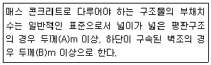
- A:0.5, B:0.8
- A:0.5, B:1.0
- A:0.8, B:0.5
- A:1.0, B:0.8
(정답률: 67%)
60. 굵은 골재의 최대 치수 규정에 대한 설명으로 틀린 것은?
- 슬래브 두께의 1/3 이하
- 일반적인 구조물의 경우 40mm
- 거푸집 양 측면 사이의 최소 거리의 1/5 이하
- 개별철근, 다발철근, 긴장재 또는 덕트 사이 최소 순간격의 3/4 이하
(정답률: 60%)
4과목: 구조 및 유지관리
61. 나선철근 기둥에서 나선철근 바깥선을 지름으로 하여 측정된 나선철근 기둥의 심부지름이 250mm, fck=28MPa, fy=400MPam일 때 기둥의 총 단면적으로 적절한 것은?
- 60000mm2
- 100000mm2
- 200000mm2
- 300000mm2
(정답률: 50%)
62. 다음 중 콘크리트 구조물의 보강공법으로 보기 어려운 것은?
- 균열주입공법
- 두께 증설공법
- FRP 접착공법
- 프리스트레스 도입공법
(정답률: 57%)
63. 기둥의 양단이 힌지일 때 이론적인 유효길이 계수 k의 값은?
- 0.5
- 0.7
- 1.0
- 2.0
(정답률: 54%)
64. 콘크리트 구조물의 보수용 재료 선정에서 중요하게 고려되지 않는 물성은?
- 내화성
- 투습성
- 탄성계수
- 치수 안정성
(정답률: 37%)
65. 폭 400mm, 높이 550mm, 유효깊이 500mm, 압축철근량 1588.4,mm2, 인장철근량 3176.8mm2인 복철근 직사각형 단면의 보에서 하중에 으한 탄성처짐량이 1.2mm일 때 하중재하 1년 후 총 처짐량은?
- 1.2mm
- 2.1mm
- 2.4mm
- 2.9mm
(정답률: 44%)
66. 4변의 의해 지지되는 2방향 슬래브 중 1방향 슬래브로서 해석될 수 있는 경우는? (단, L:슬래브의 장변, S:슬래브의 단변)
- L/S이 1일 때
- L/S이 2보다 클 때
- S/L가 2보다 클 때
- S/L가 1보다 작을 때
(정답률: 59%)
67. 직사각형 단면을 가지는 단순보에서 콘크리트다 부담하는 공칭전단강도(Vc)는? (단, 보통중량콘크리트이며, 폭=300mm, 유효깊이=500mm, fck=27MPa이다.)
- 54.6kN
- 72.6kN
- 89.6kN
- 129.9kN
(정답률: 44%)
68. 프리스트레스트콘크리트 휨부재의 비균열등급, 부분균열등급 및 완전균열등급에 대한 설명으로 틀린 것은?
- 완전균열등급은 인장연단응력 ft가.1.0 √fck를 초과하는 경우이다.
- 비균열 등급은 인장연단응력 ft가 1.0√fck이하인 경우이다.
- 2방향 프리스트레스콘크리트 슬래브는 비균열등급으로 설계한다.
- 부분균열등급 휨부재의 사용하중에 의한 응력은 비균열단면을 사용하여 계산한다.
(정답률: 36%)
69. 아래에서 설명하는 비파괴시험방법은?
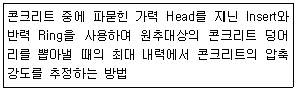
- BS Test
- Tc-To Test
- Pull-out Test
- RC-Radar Test
(정답률: 72%)
70. 콘크리트 탄산화에 관한 설명으로 틀린 것은?
- 탄산화 속도는 물-결합재비가 낮을수록 빨라진다.
- 온도가 높은 쪽이 온도가 낮은 쪽보다 탄산화 진행이 빠르다.
- 탄산화 깊이는 일반적으로 구조물의 사용기간이 길어짐에 따라 깊어진다.
- 수중의 콘크리트보다 습윤의 영향을 받는 콘크리트가 탄산화 진행이 빠르다.
(정답률: 50%)
71. 2방향 슬래브를 직접설계법으로 설계할 때, 단변방향으로 정역학적 총모멘트가 200kNㆍm일 때, 내부패널의 양단에서 지지해야할 휨모멘트(㉠)와 내부패널의 중앙에서 지지해야할 휨모멘트(㉡)로 옳은 것은?
- ㉠:-65kNㆍm, ㉡:35kNㆍm
- ㉠:130kNㆍm, ㉡:70kNㆍm
- ㉠:-130kNㆍm, ㉡:70kNㆍm
- ㉠:130kNㆍm, ㉡:-70kNㆍm
(정답률: 38%)
72. 단부에 표준갈고리가 있는 도막되지 않은 인장 이형철근 D25(공칭지름 25.4mm)를 정착시키는 데 필요한 기본정착길이(lhb)는? (단, 보통중량콘크리트이고, fck=24MPa, fy=400MPa이며, 보정계수는 고려하지 않는다.)
- 498mm
- 519mm
- 584mm
- 647mm
(정답률: 38%)
73. 콘크리트 구조물의 평가 및 판정을 할 경우 종합적인 평가 기초 대상이 아닌 것은?
- 기능성
- 기술성
- 내구성
- 내하성
(정답률: 57%)
74. 피로에 관한 설명으로 틀린 것은?
- 기둥의 피로는 슬래브에 준하여 검토하여야 한다.
- 보 및 슬래브의 피로는 휨 및 전단에 대하여 검토하여야 한다.
- 피로의 검토가 필요한 구조 부재는 높은 응력을 받는 부분에서 철근을 구부리지 않도록 하여야 한다.
- 하중 중에서 변동하중이 차지하는 비율이 크거나 작용빈도가 크기 때문에 안전성 검토를 필요로 하는 경우에 적용하여야 한다.
(정답률: 54%)
75. 아래의 휨 부재에 균열을 제어하기 위한 인장철근의 간격 제한 규정에 대한 설명으로 틀린 것은?
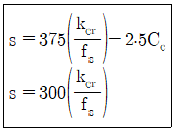
- Cc는 인장철근이나 긴장재의 표면과 콘크리트 표면사이의 최소 두께이다.
- fs는 설계기준항복강도 fy의 2/3를 근사적으로 사용할 수 있다.
- kcr은 철근조건을 고려한 계수로, 건조환경일 경우 210으로 한다.
- fs는 사용하중 상태에서 인장연단에서 가장 가까이에 위치한 철근의 응력이다.
(정답률: 46%)
76. 간혹 수분과 접촉하고 동결융해의 반복작용에 노출되는 콘크리트는 노출등급 F1에 해당된다. 이 경우, 굵은 골재 최대치수(mm)에 따른 확보해야 할 공기량(%)의 관계가 틀린 것은?
- 10mm-7.0%
- 15mm-5.5%
- 20mm-5.0%
- 25mm-4.5%
(정답률: 39%)
77. 상세조사는 표준조사의 자료로부터 원인추정, 보수보강 여부의 판정과 보수보강공법 선정이 불가능한 경우에 실시한다. 상세조사의 시험항목이 아닌 것은?
- 균열 폭
- 강도 시험
- 콘크리트 분석
- 탄산화 깊이 시험
(정답률: 39%)
78. 준공 후 20년 경과한 콘크리트 구조물의 탄산화 깊이가 15mm이었다. 준공 후 100년 경과된 시점에서 탄산화 깊이의 예측값으로 적정한 것은? (단, 탄산화 깊이 C=A√t이고, 여기서 A의 비례상수, t는 시간이다.)
- 10.4mm
- 19.5mm
- 27.4mm
- 33.5mm
(정답률: 51%)
79. 다음 그림과 같은 단철근 직사각형 단면에서 인장철근은 D22 철근 2개가 윗부분에, D29철근 2개가 아랫부분에 두 줄로 배치되었다. 이 때 보의 공칭휨강도(Mn)은? (단, fck=28MPa, fy=400MPa이며 철근 D22 2본의 단면적은 774mm2, 철근 D29 2본의 단면적은 1285mm이다.)
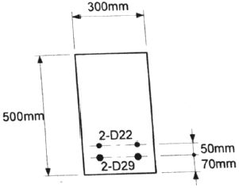
- 271kNㆍm
- 281kNㆍm
- 291kNㆍm
- 301kNㆍm
(정답률: 36%)
80. 철근콘크리트 부재의 비틀림철근 상세에 대한 설명으로 틀린 것은?
- 휨방향 비틀림철근은 종방향 철근 주위로 135° 표준갈고리에 의하여 정착하여야 한다.
- 종방향 비틀림철근은 폐쇄스터럽의 둘레를 따라 300mm 이하의 간격으로 분포시켜야 한다.
- 종방향 비틀림철근의 지름은 스터럽 간격의 1/24 이상이어야 하며 또한 D10이상의 철근이어야 한다.
- 횡방향 비틀림철근의 간격은 200mm 보다 작아야 하고, 또한 가장 바깥의 횡방향 폐쇄스터럽 중심선의 둘레의 1/6보다 작아야 한다.
(정답률: 36%)